Inteligência e Amor

Artista e Filósofo, criador do PANAMORISMO, uma filosofia que combina inteligência e amor. "Ela será a filosofia do futuro com toda certeza".
Artista e filósofa, professora da Universidade Federal de Pernambuco, sinaliza que o PANAMORISMO é uma das criações excepcionais no mundo da filosofia e da experiência de vida.
Lúcio e Alexandra iniciaram seus trabalhos com pessoas em situação de rua, inspirados pelo padre americano Lorenzo Rosebaugh, que se tornou um exemplo de coragem ao enfrentar a violência quando defendia os mais vulneráveis.
"Ao abordar o amor sob essa perspectiva artística, ele nos faz perceber a importância de redefinir o amor. É uma necessidade vital resgatar esse conceito artístico do amor. Van Gogh já dizia: "Não há nada mais verdadeiramente artístico do que amar as pessoas". Musta aponta para algo essencial, e faz isso a partir da arte. E é daí que tudo se desencadeia".

"Panamorismo – Inteligência e Amor, vídeo documentário de Nêio Mustafa, mostra o amor e inteligência como fontes primordiais da existência humana. Através de seus conceitos filosóficos ancorados no seu fazer artístico, Lúcio Mustafá e Alexandra Mustafá inspiram a acreditarmos/ esperançarmos o ser humano. O casal de artistas-filósofos abrem seus arquivos discorrendo sobre suas experiências no convívio e lastro social como fatores preponderantes para desconstruírem na sociedade a ideia de religião, a partir do que foi capitaneado por meio de suas ações em seus papéis sociais".
Em meio a tantas subculturas que emergiram ao longo do tempo, surge a reflexão sobre a autenticidade de suas convicções: darks, punks, hippies e skinheads de Cristo. Muitos desses grupos, embora conectados a movimentos rebeldes, nem sempre estão dispostos a serem verdadeiramente fiéis aos seus princípios.
"No filme, Lúcio aborda essa questão de forma clara e direta, lembrando-nos da importância de termos algo pelo qual lutar. Fiquei surpreso com a maneira como Lúcio conecta o modernismo à evolução das relações humanas, do amor, da política e da inteligência. Não é comum ver um filósofo tratar o amor e a inteligência de forma tão integrada e filosófica. Para mim, essa abordagem foi uma novidade refrescante e extremamente relevante no cenário mundial.
All You Need is Love, lembrei dessa frase dos Beatles que, apesar de parecer uma canção simples, Lúcio explora essa ideia com profundidade".
"Este nosso tempo conturbado pede uma resposta filosófica de nossas mentes iluminadas. Daí a importância do registro audiovisual, com afetuosa abordagem, da filosofia da amorosidade consciente, fundada no autoconhecimento, na igualdade e na solidariedade. A plena realização humana se d(ar)á com as individualidades em ataraxia, a criar, compartilhar e fruir arte, em harmoniosa convivência entre si e com a natureza".
Esse fenômeno é provocado pela propaganda dos militaristas, dos líderes religiosos e dos capitalistas que são aliados e precisam convencer os indivíduos e as massas de que não é nada demais a exploração do homem pelo homem; de que não é errado deixar pessoas jogadas na sargeta morando na rua; de que não é errado usar as forças humanas no trabalho enquanto se é jovem e na velhice deixar os velhos abandonados etc. Então eles divulgaram falácias segundo as quais o homem seria (por natureza) o lobo do próprio homem (Hobbes) ou pecador de nascença (Bíblia); de que todos só se interessam em ter poder (Nietzsche, Foucault) e que se deveria ir para além do bem e do mal (também Nietzsche).
Em outras palavras: o sistema precisa enfiar na mentalidade humana a crença de que ninguém é bom e de que é impossível um mundo onde todos se associem para fazer tudo ser de todos totalmente.
O Panamorismo foi criado exatamente para mostrar para a humanidade que ela tem sido é escravizada mentalmente por essas propagandas de maldade e que a estão obrigando a se maleficarem. Isso é: o Panamorismo é exatamente a mensagem revolucionária de que é possível nos livrarmos daquela escravidão mental se deixarmos de nos deixar levar por aquela propaganda perversa.
É por isso que o Panamorismo aponta para a propaganda Pessimista e mostra que ela é uma insistência dos agentes do conservadorismo e do reacionarismo pois se a humanidade se tornar 100% pessimista a possibilidade de revolucionar o sistema estará exterminada.
Daí a trilogia panamorista ser: bondade, inteligência e Otimismo Realista.
SIGA O LÚCIO no Facebook
Arte • Contos • Curtas • English • Filosofia • Italiano • Poesias
"Eles comparam a Idade Média com a pós-modernidade, onde a religião dominava através do medo – medo do inferno, da culpa, da culpa cristã. Ao meu ver, a pós-modernidade contempla o ‘nada’, o ‘vazio’, o ‘imediato’, apagando a noção de amor e inteligência. O filme traz reflexões muito interessantes. Recomendo!".
"Vídeo documentário que propõe a busca do mundo bom, a partir das bondades exercitadas individualmente, uma proposta surgida pelo Panamorismo de Alexandra e Lúcio Mustafá. Junto com alguns relatos de pessoas que conviveram com estas ideias na prática e suas contradições da atualidade da época".
"Lúcio Mustafá, profeta do amor, amor para todos, por todos, totalmente. Hippie, filósofo, multiartista. Sacerdote da paz. Panamorismo, filosofia existencial de amar a tudo e a todos totalmente, da maior relevância, em um mundo carente de amor".
Inspirado por sua vivência nas favelas, Lúcio Mustafá transforma revistas velhas em obras de arte, reconstruindo os meninos da própria favela. Sua arte era um reflexo do processo de exclusão social, denunciando uma sociedade que descarta tanto materiais quanto pessoas.
"O Panamorismo carrega uma nobreza intrínseca em sua proposta de transformação e representa um movimento verdadeiramente revolucionário. A sociedade avançou tão pouco na transformação dos seres humanos em indivíduos mais civilizados, sociáveis, amorosos e compassivos. Nesse sentido, o que Lúcio está promovendo é, sem dúvida, inovador e necessário".
"Quando assisti ao filme, o que vi foi uma ideia muito conectada à Era de Aquário. Nos anos 70, se imaginava que, a essa altura, nós já estaríamos no Paraíso, onde todo mundo viveria bem, onde só existiriam paz e amor. Criou-se esse lema porque os hippies pregavam isso, e muita gente acreditava na possibilidade de mudança do ser humano. Eu admiro essa visão utópica que o filme apresenta, mas reconheço que alcançar essa realidade em uma sociedade tão complexa como a nossa é um grande desafio".

"Vamos trazer aqui o pensamento de Alexandra e Lúcio Mustafá sobre o PanAmorismo, ideia essa que toma como referência o binômio “inteligência e amor”, o mesmo utilizado por Platão no seu diálogo Banquete, para nos dizer que devemos buscar a compreensão da ideia do Bem com inteligência e amor. Vejo, portanto, nas falas do casal, um interessante exórdio e, ao mesmo tempo, um apelo necessário a algo que pode, sim, vir a fazer imensa diferença – a disseminação do amor – em meio ao mundo que habitamos, tão hostil, ameaçador e desumano".
"O tema do filme é excelente. Também acredito que amor e inteligência seriam a resposta para os problemas que enfrentamos no planeta. O filme traz ideias que precisam ser espalhadas. São ideias simples, mas fundamentais. Sinto-me agradecida por ver que existem pessoas como o Lúcio. “Cada um muda a si mesmo e a gente ainda muda o mundo.” Esse trabalho é importante e precisa ser feito! Depois de assistir ao filme, reforcei aquilo que já pensava e que sei ser o certo a fazer. A mensagem é simples, mas profunda: se erramos, consertamos. Isso é um ato de amor, e devemos corrigir nossos erros. Continuamos plantando a semente do amor".
"Gostei muito da filosofia panamorista. Sinto que todos aqueles que já desejaram, em algum momento, viver em um mundo mais equilibrado, com melhores condições de vida para todos, sem preconceitos, sem violência, sem guerras e sem fronteiras, um mundo baseado no amor, provavelmente se identificarão com o Panamorismo. Eu já era panamorista e não sabia.
Parabéns pelo filme, meu amigo Nêio! Parabéns também ao Lúcio e à sua companheira, Alexandra, que deram nome a esse sentimento e o transformaram em movimento.”
O sistema não quer que o artista seja um guia de ideias. As escolas de arte muitas vezes ensinam "coisas" ilógicas para os alunos e isso faz com que elas percam a sua real filosoficidade.

Nêio Mustafa é um cineasta comprometido em retratar as nuances e profundidades da experiência humana em suas obras. Suas produções cinematográficas exploram as interações entre arte, filosofia e sociedade, buscando provocar reflexões sobre os dilemas e as virtudes da condição humana. Com um olhar sensível e atento às questões sociais e culturais, Nêio utiliza o audiovisual como uma ferramenta de transformação, oferecendo novas perspectivas sobre empatia, justiça e inclusão.
Seu mais recente projeto, "Histórias de Vida", é um testemunho de sua abordagem humanista, ao registrar as trajetórias de personalidades notáveis e suas contribuições para o mundo, revelando histórias de vida que inspiram e transformam.